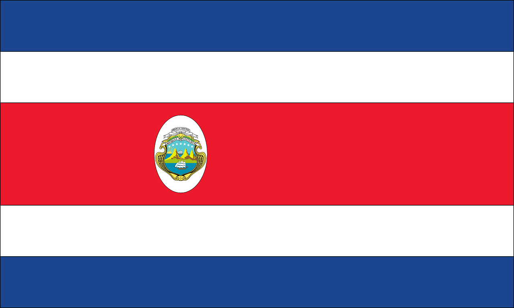

Najljepše destinacije na jednom mjestu
Ako ste ljubitelj biciklizma i pitate se gdje biste mogli otputovati na aktivan odmor, ova je stranica baš za Vas. Ujedinjuje neke od najljepših destinacija svijeta kako biste što lakše mogli odlučiti gdje ćete, osim prekrasnih mjesta viđenih na dva kotača, doživjeti i čari lijepih gradova bogate baštine. Virtualno ćemo Vas provesti kroz nevjerojatna mjesta, a Vama ćemo prepustiti odluku koje će mjesto biti Vaša sljedeća destinacija.
Države koje ćemo istraživati su:
- Kanada

- Kina
- Kostarika 
- Engleska

- Francuska
- Novi Zeland

- Australija
- Tajvan
- Kolorado
| Ime staze | Država | Dužina |
|---|---|---|
| The Great Trail | 24 000 km | |
| Munda Biddi Trail | 1000 km | |
| The Friendship Highway | 800 km | |
| Route des Grand Crus | 800 km | |
| Colorado Trail | 782 km | |
| Around the Sun Moon Lake | 782 km | |
| Molesworth Road | 320 km | |
| La Ruta de los Conquistadores | 270 km | |
| The Great Ocean Road | 243 km | |
| P'tit Train du Nord Linear Park | 200 km | |
| The South Downs Way | 160 km |
Svoj bicikl možete voziti po različitim vrstama staze, među kojima su:
- cesta
- drveni putevi
- makadam
- šumski putevi
Bez obzira na to jeste li ljubitelj kraćih i opuštajućih vožnji ili onih ekstremnijih, sigurni smo da ćete na ovoj stranici naći nešto što baš Vama odgovara!